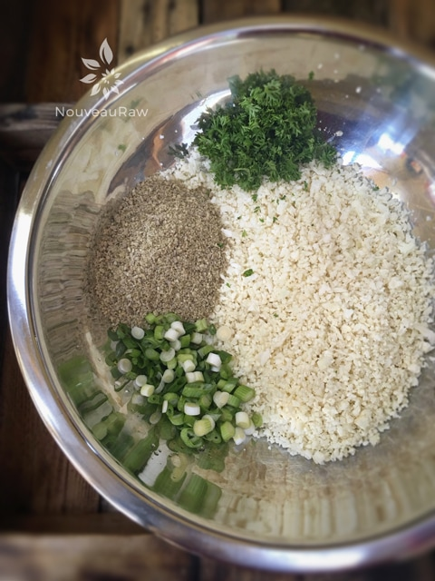
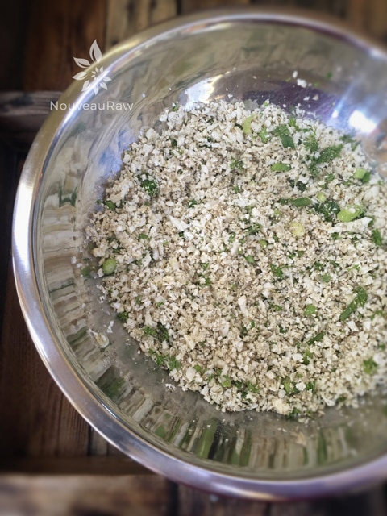
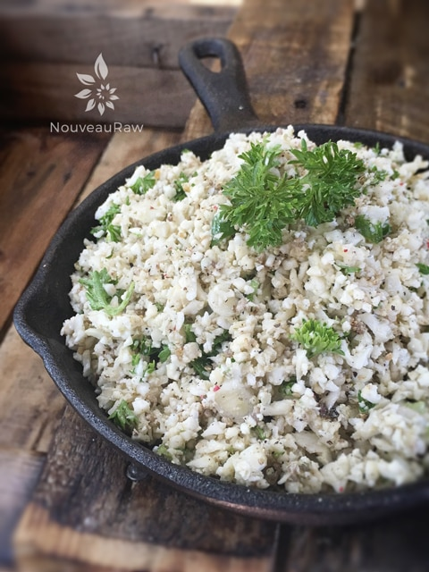

Savory Seeded Cauliflower “Rice”
~ raw, vegan, gluten-free, nut-free ~
During the Fall and Winter months, I find myself searching for those dishes that are comforting and warming… not only to the belly but the soul as well.
I am always ready for Fall to come. I love summertime, who doesn’t. But Fall instantly floods my body with a warmth that oddly enough causes goosebumps.
Waking up with a cold nose, snuggling deeper and deeper into the layers of heavy quilts… as I step out onto the wooden floor with my bare tootsie-pops, my feet cry for those warm fuzzy socks that are tucked in the far corner of the drawer… heading out the door, swaddled in layers of clothing, wrapping handmade scarves around my neck… sipping hot tea with my husband as we draw closer and closer to one another on the sofa, pleading with the crisp room air to stay away.
Goodness gracious, I sort of dazed out there. Hehe, I had to reel myself back in so I could get this recipe ready for you. I hope I didn’t lose you. :)
So, let’s talk about little ingredients here. Cauliflower is the new kale if you ask me. More and more it seems that people are trying to avoid the starchy potatoes, rice and pasta in their diets… regardless of what their eating lifestyle might be. It used to be that this poor unloved veggie just got pushed around the plate and caused noses to wrinkle. But now it is steamed, baked, fried, mashed, “riced,” and made into sauces… it just never ends! I too am hopping on board because I love cauliflower and always have, in any shape or form.
To “rice” cauliflower, it is just a matter of breaking it down to rice sized bits by either using a food processor, grater or in tight situations, a knife. To keep it raw, it can be eaten as is for a crunchier texture or you can pop it into the dehydrator for a few hours to soften it. The remaining ingredients that I added are to give the cauliflower rice a heartier flavor. By itself, it is a bright and light flavor. But again, for winter time, I want something substantial and wholesome. So even though I am talking about making this during the chillier months, it can easily adapt to the warmer weather, giving you that light and fresh flavor.
Yields 3 cups
- 1 lb cauliflower, (about 1 small head)
- 1/4 cup raw pumpkin seeds, soaked & dehydrated
- 1/4 cup raw sunflower seeds, soaked & dehydrated
- 2 tsp nutritional yeast
- 1/2 tsp Himalayan pink salt
- 1/2 tsp black pepper
- 4 green onions, white and green parts sliced thin
- 3 Tbsp chopped fresh parsley
- 2 Tbsp cold-pressed olive oil
Preparation:
- Roughly chop the cauliflower, discarding the stem and outer leaves.
- Place the cauliflower into the food processor, fitted with the “S” blade, and pulse until it reaches a rice-sized texture.
- The pulsing actions works best as it causes the cauliflower to jump and rotate around in the bowl while being chopped.
- This action prevents the cauliflower from getting over-processed on the bottom with big chunks left on top to still break down.
- When finished place a medium-sized bowl.
- If you don’t have a food processor, you can use a cheese grater and do it by hand. Or practice your knife skills.
- Using either the food processor or a spice grinder, break the seeds, nutritional yeast, salt, and pepper, down to a flour texture. Add to cauliflower.
- Add the green onions, parsley, and olive oil. Stir everything together, making sure the dry ingredients get mixed in well.
- Serving options: you can enjoy this at room temp, or you can warm it in the dehydrator set at 115 degrees for a few hours.
- Store leftovers in the fridge for 3-5 days.

Above – I wanted to show you the textures of the ingredients before I mixed them. Below… all mixed up. :)


© AmieSue.com